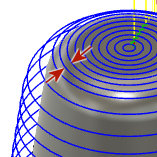

<div id="scallop_new_stepover"><p>パス間の水平切削ピッチを指定します。</p>
<table class="tipTable" cellspacing="10">
<tr>
<td><center></center></td>
</tr><tr>
<td><center><p><b>切削ピッチ距離</b></p></center></td>
</tr></table>
<p>既定値は刃物直径の 10% です。</p>
</div>